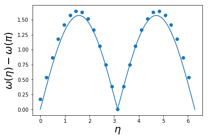

Spin Models
In this lecture we introduce a simple quantum mechanical model of magnetism consisting of a lattice of coupled spins. As in the elastic chain, we identify the elementary excitations and their interaction.
Reading: Auerbach (2012).
1 The Heisenberg Model
You have probably encountered the Ising model of magnetism, defined by the Hamiltonian
\[ H = J\sum_{\langle j\,k\rangle} \sigma_j \sigma_k, \label{spin_ising} \]
where the ‘spin’ variables \(\sigma_j\) take the values \(\pm 1\). The notation \({\langle j\,k\rangle}\) indicates that the sum is over all nearest neighbour pairs on some (e.g. cubic) lattice. A coupling \(J<0\) between spins means that aligned spins have a lower energy than anti-aligned spins, favouring ferromagnetism.
While there’s a lot of mileage in the Ising model as a statistical mechanical model – it can describe the ferromagnetic phase transition – it has some shortcomings as a quantum Hamiltonian. Identifying the variable \(\sigma_j\) with a component of a spin-1/2 along some axis \(\sigma_j = 2s^z_j\), we see that there are no non-commuting variables in the Hamiltonian, and therefore no dynamics to the system of spins. The eigenstates are simply product states of \(s_j^z\) eigenstates.
A more realistic model from this point of view is the Heisenberg model describing a system of spin-1/2s
\[ H = J \sum_{\langle j\,k\rangle} \mathbf{s}_j \cdot \mathbf{s}_k. \tag{1}\]
Although it is not possible to solve this model in general, we will see that it captures many of the dynamical features (e.g. spin waves) of real magnetic materials.
2 The Heisenberg Ferromagnetic Chain
2.1 States and operators
One spin-1/2 is described by a state \(\lvert{\psi}\rangle\) in a two-dimensional Hilbert space. It’s common to choose as a basis the eigenstates of \(s^z\). If we denote these as \(\lvert{\pm}\rangle\) with \(s^z\lvert{\pm}\rangle = \pm \frac{1}{2}\lvert{\pm}\rangle\), we write \[ \lvert{\psi}\rangle = \psi_+\lvert{+}\rangle + \psi_-\lvert{-}\rangle=\begin{pmatrix} \psi_+ \\ \psi_- \end{pmatrix}. \]
For \(N\) spins we take basis of product states
\[ \lvert{\sigma_1}\rangle\lvert{\sigma_2}\rangle\cdots \lvert{\sigma_N}\rangle, \qquad \text{where } \sigma_j=\pm. \]
We met product states as explicit wavefunctions in Lecture 1. The abstract structure is called a tensor product, normally denoted
\[ \lvert{\sigma_1}\rangle\otimes\lvert{\sigma_2}\rangle\otimes\cdots \otimes \lvert{\sigma_N}\rangle \]
We normally drop the \(\otimes\) for brevity. In the basis of product states a general state of \(N\) spin-1/2s is written
\[ \lvert{\Psi}\rangle=\sum_{\{\sigma_j=\pm\}}\Psi_{\sigma_1\cdots \sigma_N}\lvert{\sigma_1}\rangle\lvert{\sigma_2}\rangle\cdots \lvert{\sigma_N}\rangle \]
What is the dimension of the Hilbert space in which the Hamiltonian acts?
Now we turn to operators that act on the spins. The spin operators obey the usual commutation relations
\[ [s^a,s^b]=i\epsilon_{abc}s^c \]
For \(N\) spins we write \(s^a_j\) for a spin operator acting on \(j^\text{th}\) spin
\[ s^a_j\lvert{\sigma_1}\rangle\lvert{\sigma_2}\rangle\cdots \lvert{\sigma_N}\rangle = \lvert{\sigma_1}\rangle\lvert{\sigma_2}\rangle\cdots \lvert{\sigma_{j-1}}\rangle (s^a \lvert{\sigma_j}\rangle) \lvert{\sigma_{j+1}}\rangle\cdots\lvert{\sigma_N}\rangle, \]
Alternatively, we may express this as
\[ s^a_j = \overbrace{\mathbb{1}\otimes \cdots \mathbb{1}}^{j-1}\otimes s^a \otimes \overbrace{\mathbb{1} \otimes\cdots \mathbb{1}}^{N-j} \]
What is \([s^a_j,s^b_k]\) for \(j\neq k\)?
2.2 Ground State
Let’s try and guess some eigenstates. For simplicity we’ll begin with the 1D case, where the spins are arranged in a chain
\[ H = J \sum_{j=1}^N \mathbf{s}_j \cdot \mathbf{s}_{j+1}, \]
and as usual we take \(\mathbf{s}_j=\mathbf{s}_{j+N}\) (periodic boundary conditions). Such a system is called a spin chain. Surprisingly enough, crystals do exist in which magnetic atoms are arranged in this way, with only weak coupling between neighbouring chains. So models of this type are a useful description, at least in some energy window, of real materials.
What is the dimension of the Hilbert in which the Hamiltonian acts?
Since Equation 1 is supposed to be a model for a magnet, we might try the state with all spins aligned
\[ \begin{equation} \lvert{\text{FM}}\rangle \equiv \prod_{j=1}^N \lvert{+}\rangle_j, \end{equation} \]
where for brevity we write \(\lvert{+}\rangle_j = \lvert{s^z=+1/2}\rangle_j\). It’s not hard to check that this is an eigenstate with energy \(E_0\equiv JN/4\). Furthermore it’s an eigenstate of \(S^z\) and \(\mathbf{S}^2\), where \(\mathbf{S}\) is the total spin
\[ \mathbf{S} = \sum_{j=1}^N \mathbf{s}_j. \]
The eigenvalues are \(S^z = N/2\) and \(\mathbf{S}^2 = \frac{N}{2}\left(\frac{N}{2}+1\right)\). The rotational invariance of the Hamiltonian implies that the state \(\lvert{\text{FM}}\rangle\) should be a member of a multiplet of \(N+1\) degenerate eigenstates related by rotations. These states can be generated by acting on \(\lvert{\text{FM}}\rangle\) with \(S^-=S^x-iS^y\). The first is
\[ S^-\lvert{\text{FM}}\rangle = \sum_{j=1}^N s^-_j\lvert{\text{FM}}\rangle = \sum_{j=1}^N \lvert{+}\rangle_1\lvert{+}\rangle_2\cdots \lvert{+}\rangle_{j-1} \lvert{-}\rangle_j\lvert{+}\rangle_{j+1}\cdots \lvert{+}\rangle_N. \tag{2}\]
Verify that \(S^z = N/2-1\), but that \(\mathbf{S}^2\) and \(H\) are unchanged.
Equation 2 is a superposition of terms with one spin flipped. If we continue the process to explore the whole multiplet, we will at each state end up with a constant amplitude superposition of all states with two spins flipped (for \(S^z=N/2-2\)), three flipped (for \(S^z=N/2-3\)) and so on.
Are these the ground states for \(J<0\)? One way to convince ourselves is to write the Hamiltonian as
\[ H = J \sum_{j=1}^N \mathbf{s}_j \cdot\mathbf{s}_{j+1} = J \sum_{j=1}^N \left[(\mathbf{s}_j+\mathbf{s}_{j+1})^2-\mathbf{s}_j^2 - \mathbf{s}_{j+1}^2\right] = -\frac{3JN}{2} + J \sum_{j=1}^N (\mathbf{s}_j+\mathbf{s}_{j+1})^2. \]
It’s then clear that the last term is minimized if every neighbouring pair of spins has total spin \(1\), as they do for \(\lvert{\text{FM}}\rangle\). Are there other states that satisfy this condition?
2.3 First Excited States
What about just one of the states in the superposition Equation 2?
\[ \lvert{j}\rangle = \lvert{+}\rangle_1\lvert{+}\rangle_2\cdots \lvert{+}\rangle_{j-1} \lvert{-}\rangle_j\lvert{+}\rangle_{j+1}\cdots \lvert{+}\rangle_N. \]
Is this an eigenstate? Let’s try acting on this state with the Hamiltonian. It’s convenient to write the terms in the Heisenberg Hamiltonian in terms of raising and lowering operators
\[ \mathbf{s}_j \cdot \mathbf{s}_{j+1} = s^z_js^z_{j+1} + \frac{1}{2}\left(s^+_js^-_{j+1} +s^-_js^+_{j+1}\right), \]
where
\[ s^+ = \begin{pmatrix} 0 & 1 \\ 0 & 0 \end{pmatrix},\qquad s^- = \begin{pmatrix} 0 & 0 \\ 1 & 0 \end{pmatrix} \]
Now note that
\[ \left(s^+_j s^-_{j+1} +s^-_js^+_{j+1}\right)\lvert{+}\rangle_j\lvert{-}\rangle_{j+1} = \lvert{-}\rangle_j\lvert{+}\rangle_{j+1}. \]
It then follows that the action of \(H\) on the state \(\lvert{j}\rangle\) is
\[ H\lvert{j}\rangle = (1-N/4) \lvert{j}\rangle - \frac{1}{2}\left(\lvert{j-1}\rangle+\lvert{j+1}\rangle\right). \]
(I’ve set \(J=-1\) as it’s the only scale in the problem, so no harm done.) Acting with \(H\) therefore leaves us within the subspace spanned by the states \(\lvert{j}\rangle\). It had to, of course: this is the subspace with \(S_z=N/2-1\). We can think of down spins as being like particles, with the Hamiltonian conserving their number.
We can easily diagonalize \(H\) in this space by noting that it corresponds to a circulant matrix. As we saw in Lecture 3, the eigenstates are plane waves
\[ \lvert{\eta}\rangle = \frac{1}{\sqrt{N}}\sum_{j=1}^N e^{i\eta j}\lvert{j}\rangle, \tag{3}\]
with \(\eta = \frac{2\pi n}{N}\), \(n = -(N-1)/2,\ldots, (N-1)/2\). The eigenvalues are \(E = E_0 + \omega(\eta)\), with
\[ \omega(\eta) = 2\sin^2\eta/2. \tag{4}\]
Note that the dispersion relation is periodic, as in the case of the elastic chain, but is now quadratic, rather than linear, at small \(\eta\). \(\eta=0\) corresponds to the state Equation 2, and indeed the energy \(\omega(0)=0\) in that case.
If we are thinking of the down spin as a particle, then the eigenstates Equation 3 are like plane wave states. These excitations are known as magnons.
2.4 \(N\)-Magnon States
Any system at finite temperature has a finite energy density, or a total energy proportional to the system size. Since a magnon has a microscopic energy set by \(J\), such a system will presumably have many magnons (many flipped spins). As we increase the number of flipped spins, we increase the size of the subspace in which \(H\) acts – it has dimension \(\binom{N}{n}\) for \(n\) flipped spins i.e. \(S^z = N/2-n\). Things are obviously going to get difficult quickly! The case of two magnons is discussed in the Appendix. It turns out that for the Heisenberg model we are lucky, and we even know the form of a general energy eigenstate with \(n\) flipped spin. It’s called Bethe’s ansatz and we’ll meet it in Lecture 15.
We started our discussion with the ground state of the ferromagnetic \(J<0\) Heisenberg model. What about \(J>0\)? Can we guess the ground state in this case (of course, that’s equivalent to finding the highest excited state of the ferromagnet). Bethe’s ansatz tells us that it must be some complicated gas of magnons, all scattering off each other. Why are things so complicated?
2.5 Antiferromagnets Are Different!
Let’s try and guess the ground state of the antiferromagnet. Since anti-aligning spins should be favoured, we might try
\[ \lvert{\text{AFM}}\rangle \equiv \lvert{+}\rangle_1\lvert{-}\rangle_{2}\cdots \lvert{+}\rangle_{N-1}\lvert{-}\rangle_{N}, \tag{5}\]
assuming \(N\) is even. Acting with the \(H\) reveals that we are out of luck, however. The reason is simple: regarding the down spins as particles arranged on every other site, the spin flip terms of the Hamiltonian cause them to move about. This is Bethe’s dense gas of interacting magnons.
But antiferromagnets, with the kind of alternating order described by Equation 5 do exist! In fact, their existence was predicted by Louis Néel in 1936 before their experimental discovery. Equation 5 is sometimes called a Néel state for this reason. In Section 5.2 you’ll find a discussion of what we mean when say that a system has an antiferromagnetic ground state, using a simple model.
The Heisenberg antiferromagnetic spin chain does not have an antiferromagnetic ground state. The reason, as we’ll see, is similar to that behind the absence of Bragg peaks in the elastic chain: quantum fluctuations are too strong. On the square and cubic lattices, the Heisenberg model does display antiferromagnetism in the ground state. The above considerations show us, however, that these states are a bit more complicated than Equation 5.
3 Large \(s\) Expansion
A common strategy when faced with an intractable model is to generalize it to a family of models indexed by a parameter that may be used as an expansion parameter in some approximation scheme. In this section we’ll see an example of this approach by generalizing the Heisenberg model to arbitrary spin.
3.1 Holstein–Primakoff Representation of Spin
This is a way of representing spins in terms of oscillator variables so that a problem of coupled spins becomes a problem of coupled oscillators, of the kind we studied in Lecture 3. Since the map is nonlinear, the problem is not harmonic, although a harmonic approximation is a useful first step that turns out to be justified when the spins are large.
The representation is
\[ \begin{align} s^+ &=\sqrt{2s}\sqrt{1-\frac{a^\dagger a^{\vphantom{\dagger}}}{2s}}a^{\vphantom{\dagger}}\\ s^- &= \sqrt{2s}a^\dagger\sqrt{1-\frac{a^\dagger a^{\vphantom{\dagger}}}{2s}} \\ s^z &= \left(s - a^\dagger a^{\vphantom{\dagger}}\right). \end{align} \]
I’m going to leave it up to you to confirm that \([a^{\vphantom{\dagger}},a^\dagger]=1\) reproduces the spin commutation relations, and this problem from Problem Set 1 should demystify why this works to some extent. A rough understanding is as follows. \(s^{\pm}\) and \(a^{\vphantom{\dagger}}\), \(a^\dagger\) evidently have something in common in that they shift us up and down a ladder of states. That’s why the relation between \(s^z\) and the number of quanta in the oscillator is so simple. The oscillator ground state corresponds to \(\lvert{s,s}\rangle\).
The difference is that in the spin case the ladder is finite, while in the oscillator it is (semi-)infinite. Thus we can’t just have \(s^+\propto a^{\vphantom{\dagger}}\). We must have something that stops us lowering beyond \(s^z=-s\), corresponding to \(2s\) oscillator quanta. That’s the function of the factor in the square root in \(s^-\).
3.2 Harmonic Spin Waves
A large \(s\) approximation already presents itself
\[ \begin{align} s^+ &\sim \sqrt{2s}a^{\vphantom{\dagger}}\nonumber\\ s^- &\sim \sqrt{2s}a^\dagger\nonumber\\ s_z &= \left(s - a^\dagger a^{\vphantom{\dagger}}\right). \end{align} \tag{6}\]
We are neglecting terms of order \(s^{-1/2}\). The point about this approximation is that it is just what is needed to turn our Heisenberg Hamiltonian into a quadratic oscillator Hamiltonian. We get \[ H = J\sum_j \left[(s-a^\dagger_ja^{\vphantom{\dagger}}_j)(s-a^\dagger_ja^{\vphantom{\dagger}}_j) + sa^\dagger_ja^{\vphantom{\dagger}}_{j+1}+s a^\dagger_{j+1}a^{\vphantom{\dagger}}_j\right]. \] This isn’t quadratic, but note that the quartic terms have a lower power of \(s\), so in the same approximation we should drop them to give \[ \begin{equation} H \sim NJs^2 + sJ\sum_j \left[a^\dagger_ja^{\vphantom{\dagger}}_{j+1}+a^\dagger_{j+1}a^{\vphantom{\dagger}}_j - 2a^\dagger_ja^{\vphantom{\dagger}}_j\right]. \end{equation} \tag{7}\] We can already see that the state with no quanta (\(a^{\vphantom{\dagger}}_j\lvert{0}\rangle=0\)) is an eigenstate. In fact this is just the spin-\(s\) generalization of the state \(\lvert{\text{FM}}\rangle\) \[ \lvert{\text{FM}}\rangle_s \equiv \prod_{j=1}^N \lvert{s,s}\rangle_j, \] and is the ground state for \(J<0\). We could continue to analyze Equation 7 in terms of the operators \(a^\dagger_j\) and \(a^{\vphantom{\dagger}}_j\) see this problem from Problem Sheet 1, but instead we’re going to write Equation 6 as
\[ \begin{align} s^x &\sim \sqrt{s}x \nonumber\\ s^y &\sim \sqrt{s}p\nonumber\\ s_z &= \left(s - \frac{1}{2}[x^2 + p^2 - 1] \right), \end{align} \]
where \(x = \frac{1}{\sqrt{2}}(a^{\vphantom{\dagger}}+a^\dagger)\) and \(p = \frac{i}{\sqrt{2}}(a^\dagger-a^{\vphantom{\dagger}})\) are canonical position and momentum coordinates.
Doing this for each spin in our chain gives the Hamiltonian
\[ H\sim NJ s^2 + sNJ+ \overbrace{sJ \sum_{j=1}^N \left[x_j x_{j+1} + p_j p_{j+1}-x_j^2 - p_j^2\right]}^{\equiv H^{(2)}} + \ldots, \tag{8}\]
where we are dropping terms that are lower order in \(s\). Equation 8 has the form of an harmonic chain, albeit one with a rather strange looking mass term. We can diagonalize it by using the Fourier expansion of the position and momentum as before
\[ \begin{align} x_j(t) &= \frac{1}{\sqrt{N}}\sum_{|n| \leq (N-1)/2} q_n(t) e^{i\eta_n j},\nonumber\\ p_j(t) &= \frac{1}{\sqrt{N}}\sum_{|n| \leq (N-1)/2} \pi_n(t) e^{-i\eta_n j}. \label{spin_Fourier} \end{align} \]
In terms of these modes \(H^{(2)}\) takes the form
\[ H^{(2)} = -2sJ \sum_{|n| \leq (N-1)/2} \sin^2(\eta_n/2)\left[q_n q_{-n} + \pi_n\pi_{-n}\right]. \tag{9}\]
Comparing with our treatment of the elastic chain, we can read of the dispersion relation
\[ \omega_{\text{FM}}(\eta) = 4s\left|J\right|\sin^2(\eta/2) \]
in agreement with Equation 4 for \(s=1/2\). Incidentally, in order that the ground state energy is \(NJ s^2\) with no correction at order \(s\), the ground state energy of the oscillators must cancel the second term of Equation 8. In other words, \[ \sum_{|n| \leq (N-1)/2} \sin^2(\eta_n/2)\langle{0}\rvert\left[q_n q_{-n} + \pi_n\pi_{-n}\right]\lvert{0}\rangle=\frac{N}{2}. \tag{10}\]
The harmonic approximation applies close to the ferromagnetic state, where there are few oscillator quanta. If the typical values of \(a^\dagger_ja^{\vphantom{\dagger}}_j\) are small — we’ve seen \(a^\dagger_ja^{\vphantom{\dagger}}_j=0\) in the ground state — the approximation \(\sqrt{1-\frac{a^\dagger_ja^{\vphantom{\dagger}}_j}{2s}}\sim 1\) that gave rise to Equation 6 is justified, and neglecting anharmonic terms is reasonable.
What about the case of antiferromagnetic coupling (\(J>0\))? Even though the generalization of Equation 5
\[ \lvert{\text{AFM}}\rangle_s \equiv \lvert{s,s}\rangle_1\lvert{s,-s}\rangle_{2}\cdots \lvert{s,s}\rangle_{N-1}\lvert{s,-s}\rangle_{N}, \]
is not a ground state, it might be close. We can’t apply the approximation Equation 6 directly, however, because this state has zero quanta on the odd sites, but \(2s\) quanta on the odd sites. To apply our approximation to states close to \(\lvert{\text{AFM}}\rangle_s\) we rotate every other spin through \(\pi\) about the \(y\) axis, so that
\[ (s^x_j,s^y_j,s^z_j)\longrightarrow (-s^x_j,s^y_j,-s^z_j),\quad j\text{ odd}. \]
The Heisenberg chain Hamiltonian then becomes
\[ H = -J \sum_{j=1}^N \left[s^x_j s^x_{j+1} - s^y_j s^y_{j+1} + s^z_j s^z_{j+1}\right]. \]
Now we proceed exactly as before. In approximating this Hamiltonian by a harmonic description close to the ferromagnetic state \(\lvert{\text{FM}}\rangle_s\), we are in fact working close to the antiferromagnetic state \(\lvert{\text{AFM}}\rangle_s\) in the original variables. The oscillator Hamiltonian is now
\[ H^{(2)} = 2sJ \sum_{|n| \leq (N-1)/2} \left[\sin^2(\eta/2)q_n q_{-n} + \cos^2(\eta/2)\pi_n\pi_{-n}\right], \tag{11}\]
corresponding to a dispersion relation
\[ \omega_{\text{AFM}}(\eta) = 2sJ\left|\sin(\eta)\right|. \tag{12}\]
This is rather different to the ferromagnetic case. Note that it vanishes both \(\eta=0\) and at the Brillouin zone boundary \(\eta=\pi\), and is linear in the vicinity of both points, compared with the quadratic behaviour of the ferromagnet. The reason for the difference is clear on comparing Equation 9 and Equation 11. In the first case both the position and momentum terms vanish at \(\eta=0\), while in the second only the position term vanishes here, with the momentum term vanishing at \(\eta=\pi\).
Can you figure out why?
Incidentally, the Bethe ansatz solution of the spin-1/2 Heisenberg chain yields dispersion relation for the lowest excited state of momentum \(\eta\) (des Cloiseaux–Pearson dispersion)
\[ \omega_{\text{dCP}}(\eta) = \frac{\pi J}{2}\left|\sin(\eta)\right|, \tag{13}\]
which has the same functional form, but with a different overall scale. You shouldn’t read too much into this, as our calculation is valid at large \(s\).
The halving of the period of the dispersion Equation 12 is due to the antiferromagnetic order doubling the size of the unit cell. Although the exact result has the same feature, there is in fact no antiferromagnetic order in the chain, as we’ll see next.
3.3 Quantum Fluctuations Degrade Antiferromagnetic Order
In the crudest approximation \(s^z_j \sim s\) in the ferromagnet and \(s^z_j \sim s(-1)^j\) in the antiferromagnet. This corresponds to perfect order. However, the Holstein–Primakoff representation has
\[ s^z_j = s - a^\dagger_ja^{\vphantom{\dagger}}_j. \]
How does the second term effect \(\langle{0}\rvert s^z_j \lvert{0}\rangle\) in the ground state of \(H^{(2)}\)? In the case of the ferromagnet, it doesn’t. We know the ground state has \(s^z = s\) exactly. One way to see why the second term doesn’t contribute is to note that by translational invariance
\[ \langle{0}\rvert a^\dagger_j a^{\vphantom{\dagger}}_j\lvert{0}\rangle = \langle{0}\rvert\frac{1}{N}\sum_{j=1}^N a^\dagger_j a^{\vphantom{\dagger}}_j\lvert{0}\rangle. \tag{14}\]
Evaluating this in terms of the normal modes gives
\[ \sum_{j=1}^N a^\dagger_j a^{\vphantom{\dagger}}_j = \frac{1}{2} \sum_{j=1}^N \left(x_j^2 + p_j^2 - 1\right) = -\frac{N}{2} + \frac{1}{2}\sum_n \left(q_n q_{-n} + \pi_n\pi_{-n}\right). \label{spin_DepEval} \]
This commutes with the harmonic Hamiltonian Equation 9, and is zero in the ground state (c.f. Equation 10). In fact, this is an exact statement not restricted to the harmonic approximation: the total number of Holstein–Primakoff bosons is conserved. The same is not true for the antiferromagnetic case Equation 9. If we had written this Hamiltonian in terms of the operators \(a^\dagger_j\), \(a^{\vphantom{\dagger}}_j\), we would have found terms involving \(a^\dagger_ja^\dagger_{j+1}\) and \(a^{\vphantom{\dagger}}_ja^{\vphantom{\dagger}}_{j+1}\) that create pairs of bosons (see this problem).
Next we use the oscillator coordinates just as in Lecture 3. Since we want to express Equation 11 in terms of ladder operators, we have to adapt our definition accordingly. For \(\eta\neq 0, \pi\) the operators
\[ \begin{align} a^{\vphantom{\dagger}}_\eta &= \sqrt{\frac{|\cot(\eta /2)|}{2}}\left(q_n + \frac{i}{|\cot(\eta /2)|}\pi_{-n}\right)\nonumber\\ a^\dagger_\eta &= \sqrt{\frac{|\cot(\eta /2)|}{2}}\left(q_{-n} - \frac{i}{|\cot(\eta /2)|}\pi_{n}\right),\qquad \eta=2\pi n/N \label{spin_adef} \end{align} \]
satisfy
\[ \sin^2(\eta/2)q_n q_{-n} + \cos^2(\eta/2)\pi_n\pi_{-n}=\frac{\omega(\eta)}{2}\left[a^\dagger_\eta a^{\vphantom{\dagger}}_\eta+a^{\vphantom{\dagger}}_\eta a^\dagger_\eta\right]. \]
This puts the Hamiltonian Equation 11 in the desired form, so we know that the ground state satisfies \(a^{\vphantom{\dagger}}_\eta\lvert{\text{GS}}\rangle=0\)
To evaluate Equation 14, we write it in terms of \(a^\dagger_\eta\), \(a_\eta\) to give
\[ \begin{align} \Delta s &= - \langle{0}\rvert\frac{1}{N}\sum_{j=1}^N a^\dagger_j a^{\vphantom{\dagger}}_j\lvert{0}\rangle\nonumber\\ &= \frac{1}{2}-\frac{1}{4N}\sum_n \left[|\tan(\eta_n/2)| + |\cot(\eta_n/2)|\right].\nonumber\\ &= \frac{1}{2}- \frac{1}{4}\int_{-\pi}^\pi \frac{d\eta}{2\pi} \left[|\tan(\eta_n/2)| + |\cot(\eta_n/2)|\right]. \end{align} \]
This represents an \(O(s^0)\) correction to \(\langle s^z_j\rangle = (-1)^j\left(s - \Delta s\right)\). However, the integral diverges logarithmically at \(\eta=0\) and \(\eta=\pi\).
This indicates that our approach breaks down in the \(N\to\infty\) limit: at finite \(N\) the sums are all finite if \(\eta=0, \pi\) are excluded.
Why can we do this? Compare with the elastic chain.
Repeat the analysis on a 2D square lattice. You should find an integral over the two-dimensional Brillouin zone. Do you find divergences?
The breakdown of the spin wave treatment in 1D has a physical meaning: there is no long range antiferromagnetic order, even at zero temperature. The situation is closely analogous to the elastic chain, where we saw that quantum fluctuations destroyed the Bragg peaks.
4 A Numerical Experiment
To make this a bit more concrete, let’s look at the results of a brute force numerical computation of the spectrum (code). Recall that the dimension of the Hilbert space is \(2^N\), so only relatively small chains are tractable. Here, we have \(N=26\), corresponding to a whopping \(2^{26}=67108864\) states! Expressed in the usual basis of \(s^z_j\) eigenstates, we can write an arbitrary state as
\[ \lvert{\Psi}\rangle=\sum_{\{s_j=\pm\}}c_{s_1\cdots s_N}\lvert{s_1}\rangle_1\lvert{s_2}\rangle_2\cdots \lvert{s_N}\rangle_N. \]
Often one can use symmetries of the model to reduce the dimension a bit. In this case, we have conservation of \(S^z_\text{tot}\), \(S_\text{tot}\), and momentum. Taking advantage of \(S_\text{tot}\) conservation is not easy in the usual basis, but restricting to states with fixed \(S^z_\text{tot}\) is straightforward. For example, \(S^z_\text{tot}=0\) gives \(\binom{26}{13}=10400600\) states.
Momentum conservation is associated with translational invariance. Translation by one lattice site is a unitary operator that maps \(T:c_{s_1 s_2\cdots s_{N-1}s_N}\to c_{s_N s_1 s_2\cdots s_{N-1}}\). \(T\) has unimodular eigenvalues given by \(e^{i\eta_n}\).
Why?
Energy eigenstates are thus labelled by one of the \(N\) \(\eta_n\) values. We can construct a basis of definite momentum by projecting into subspaces of fixed \(\eta_n\) using the operator
\[ P_\eta = \sum_{n} e^{i\eta_n} T^n. \]
This reduces the matrix dimension by a factor \(N\) if \(N\) is prime, otherwise the reduction factor is smaller. Why?
The result of finding the ground state energy in each sector is shown below, relative to the lowest energy, which is at \(\eta=\pi\). The agreement with the des Cloiseaux–Pearson dispersion (obtained in the \(N\to\infty\) limit) is quite good.

5 Appendix
5.1 Two-Magnon states
Let’s look at the \(n=2\) case. The most general state with two magnons can be written
\[ \sum_{j>k} c_{j,k}s_j^-s_k^-\lvert{\text{FM}}\rangle, \tag{15}\]
with some set of coefficients \(c_{jk}\). Note that \(j=k\) doesn’t contribute: we can’t lower the spin twice, so two magnons can’t be on the same site. Also, we don’t need to include \(c_{j,k}=c_{k,j}\) – magnons are bosons – so we only include \(j>k\).
Using our particle picture, we might suppose that if the magnons are separated from each other they can be described by plane waves. Thus we might expect something like
\[ c_{j,k}\sim \exp(i\eta_1 j + i\eta_2 k) \label{spin_2Plane} \]
to work. Acting on Equation 15 with the Hamiltonian gives the eigenvalue equation for the energy \(E = E_0 +\epsilon\)
\[ \begin{align} 2c_{j,k} - \frac{1}{2}\left(c_{j+1,k}+c_{j-1,k}+c_{j,k+1}+c_{j,k-1}\right) &= \epsilon c_{j,k},\quad j>k+1 \nonumber\\ c_{j,j-1} - \frac{1}{2}\left(c_{j+1,j-1}+c_{j,j-2}\right) &= \epsilon c_{j,j-1} \end{align} \tag{16}\]
We can think of this as a lattice analog of the two particle Schrödinger equation. The modification when \(j=k+1\) occurs because
There are only two bonds where the spin changes, instead of 4 when \(j>k+1\). Thus the ‘on-site’ term is -4 not -8. This plays the role of a nearest neighbour attractive interaction between magnons.
Magnons can’t hop on top of each other.
The first of Equation 16 is solved by
\[ c_{j,k} = c_1 \exp(i\eta_1 j + i\eta_2 k) + c_2 \exp(i\eta_1 k + i\eta_2 j),\quad \text{ for } j>k+1 \tag{17}\]
with
\[ \epsilon = \omega(\eta_1)+\omega(\eta_2). \]
The eigenvalue is thus fixed by \(\eta_1\) and \(\eta_2\). In turn, their possible values are determined by some quantization condition, as in the Lieb–Liniger model, but we leave this aside for the moment. First, we must use the \(j=k+1\) equation to determine the relationship between \(c_1\) and \(c_2\).
There’s a clever way to do this. First, even though we know \(c_{j,j}=0\) is really zero, we extend the first of Equation 16 to \(j=k+1\), and this equation then involves a ‘fake’ \(c_{j,j}\). The advantage of this is that we can then extend the form Equation 17 to \(j=k+1\) and \(j=k\). For this to work, the correct equation for \(j=k+1\) – the second of Equation 16 – must be consistent with the first. This gives the condition
\[ -c_{k+1,k} + \frac{1}{2}\left(c_{k,k} + c_{k+1,k+1}\right) = 0. \]
Using the form Equation 17 gives a relationship between \(c_1\) and \(c_2\)
\[ -2\left(c_1 e^{i\eta_1}+c_2 e^{i\eta_2}\right) + (c_1+c_2)(1+e^{i(\eta_1+\eta_2)}), \]
with solution
\[ \frac{c_1}{c_2} = -\frac{e^{i(\eta_2-\eta_1)/2}-\cos[(\eta_1+\eta_2)/2]}{e^{i(\eta_1-\eta_2)/2}-\cos[(\eta_1+\eta_2)/2]}\equiv e^{i\phi}, \tag{18}\]
where we have defined the scattering phase shift, just as in the Lieb–Liniger model. The physical picture is therefore that a pair of magnons scatter elastically off each other, their wavefunction acquiring a phase shift as they do.
Returning to our particle analogy, the existence of an attractive potential for magnons suggests we should allow for the possibility of bound states. Doing so requires complex \(\eta_{1,2}\)
\[ \begin{align} \eta_1 = u + i v,\quad \eta_2 = u - i v,\quad v>0. \end{align} \]
We also require that \(c_2=0\) in Equation 17, otherwise the eigenstate doesn’t decay. From Equation 18 we see that
\[ e^{-v} = \cos u. \]
The total momentum of the state is \(K=2u\), and evaluating the energy gives
\[ \epsilon_\text{bound}(K) = \omega(\eta_1) + \omega(\eta_2) = \frac{1}{2}(1-\cos K). \]
As a function of momentum, compare the bound state energy with the lowest energy of two free magnons.
5.2 The Anderson Tower
We consider a simple model due to Philip Anderson. The couplings of the nearest neighbour Heisenberg model on the chain, square and cubic lattices define a bipartite graph. This means that the sites (or vertices of the graph) can be grouped into two sets, with couplings only between the two sets (not within). Thus in the chain, the two sets are the even and odd sites. We call these two sets sublattice \(A\) and sublattice \(B\).
Since it seems to be hard to solve the Heisenberg model, we simplify it in the following way (this discussion follows {% cite Lhuillier:2006aa %}). Introduce the Fourier components of the spin
\[ \mathbf{s}_\mathbf{j} = \sum_{\boldsymbol{\eta}} \tilde{\mathbf{s}}_\boldsymbol{\eta} e^{i \boldsymbol{\eta}\cdot \mathbf{j}}. \]
Here \(\mathbf{j}\) denotes a \(d\)-dimensional vector of integers \(\mathbf{j}=(j_1,\ldots j_d)\), \(j=1,\ldots N\) giving the position of the spin in an \(\overbrace{N\times N \times \cdots N}^{d\text{ times}}\) cubic lattice, and likewise
\[ \boldsymbol{\eta} = (\eta_1,\ldots \eta_d) = \frac{2\pi}{N}(n_1,\ldots n_d),\quad n_a = -N/2+1,\ldots N/2 \]
gives all the wavevectors in the Brillouin zone. It’s easier to assume \(N\) is even here, to accommodate antiferromagnetic order. In terms of \(\tilde{\mathbf{s}}_\boldsymbol{\eta}\), the \(d\)-dimensional version of the Heisenberg Hamiltonian Equation 1 on the square / cubic / hypercubic lattice can be written
\[ H = JN^d\sum_{\boldsymbol{\eta}\in \text{BZ}}\gamma_{\boldsymbol{\eta}}\tilde{\mathbf{s}}_\boldsymbol{\eta}\cdot \tilde{\mathbf{s}}_{\boldsymbol{-\eta}}, \label{spin_HbergFT} \]
where \(\gamma_{\boldsymbol{\eta}}=\frac{1}{2}\sum_{j=1}^d\cos(\eta_j)\). Now we are going to do something drastic and throw away all wavevectors apart from \(\boldsymbol{\eta}=\boldsymbol{0}\) and \(\boldsymbol{\eta} = (\pi,\ldots,\pi)\). The motivation is that
\[ \tilde{\mathbf{s}}_\boldsymbol{0} = \mathcal{N}^{-1}\left(\mathbf{S}_A + \mathbf{S}_B\right), \qquad\tilde{\mathbf{s}}_{(\pi,\ldots,\pi)} = \mathcal{N}^{-1}\left(\mathbf{S}_A - \mathbf{S}_B\right), \]
where \(\mathbf{S}_A\) and \(\mathbf{S}_B\) are the total spins of the \(A\) and \(B\) sublattices, and \(\mathcal{N}= N^d\) is the total number of sites. Since antiferromagnetism involves anti-alignment of spins on the different sublattices, the second component should be particularly important. Our simplified Hamiltonian is then
\[ \begin{align} H_{AB} &= \frac{J}{\mathcal{N}}\left[\left(\mathbf{S}_A + \mathbf{S}_B\right)^2 - \left(\mathbf{S}_A - \mathbf{S}_B\right)^2\right]\\ & = \frac{4J}{\mathcal{N}}\mathbf{S}_A\cdot \mathbf{S}_B. \label{spin_HAB} \end{align} \]
(Note that \(\tilde{\mathbf{s}}_{(\pi,\ldots,\pi)}=\tilde{\mathbf{s}}_{-(\pi,\ldots,\pi)}\)) Relative to the original model, this has the unphysical feature that every sublattice \(A\) spin is interacting with every sublattice \(B\) spin. The factor of \(N^{-d}\) does guarantee that we’ll have an extensive energy, however.
What is the ground state of \(H_{AB}\), assuming \(J>0\)? This is easily answered by writing the Hamiltonian as
\[ H = \frac{2J}{\mathcal{N}} \left[\left(\mathbf{S}_A + \mathbf{S}_B\right)^2 - \mathbf{S}_A^2 - \mathbf{S}_B^2\right]. \tag{19}\]
It’s clear that we should form two spins of maximal size \(\mathcal{N}/4\) from each of the two sublattices, and then combine them to make an overall spin singlet. Obviously this singlet is a spherically symmetric state with no preferred direction, and hence no antiferromagnetic order. The ground state energy is
\[ E_0 = -J\left(\frac{\mathcal{N}}{4}+1\right), \]
which is extensive. What about the excited states? There are two options for the first excited states:
Stick with spins of size \(\mathcal{N}/4\) for the sublattices, but combine them to make a total spin \(S>0\).
Make smaller spins on the sublattices, and combine them.
In the first case, the energy of excitation above the ground state is
\[ E_S - E_0 = \frac{2J}{\mathcal{N}} S(S+1), \]
with degeneracy \(2S+1\). In the second case, reducing \(S_A\to \mathcal{N}/4 - 1\) means that \(\Delta\mathbf{S}_A^2 = -\frac{\mathcal{N}}{8}\). From Equation 19 we see that this is going to cause the energy to increase by an amount of order \(J\), while in the first case our excitations were of order \(J/\mathcal{N}\). The two kinds of excitations only have comparable energies when \(S\) is \(O(\sqrt{N})\). For smaller values of \(S\) the “type 1” states have a lower energy
Let’s describe the type 1 energy states in more detail. The two spins of magnitude \(S_A = S_B = \frac{\mathcal{N}}{4}\) can be combined to make a total spin between \(\mathcal{N}/2\) and \(0\) (assuming \(\mathcal{N}\) even). We can thus decompose the Hilbert space of the two spins as
\[ \mathcal{H}_A\otimes \mathcal{H}_B = \mathcal{H}^{(0)}\oplus\mathcal{H}^{(1)}\oplus\cdots \mathcal{H}^{(\mathcal{N}/2)}, \]
where \(\mathcal{H}^{(S)}\) is the Hilbert space of a spin \(S\).
Now we consider a superficially different problem: a particle of mass \(M\) moving on a sphere of radius \(R\), with Hamiltonian
\[ H_\text{rotor} = \frac{ \mathbf{L}^2}{2MR^2}, \label{spin_rotor} \]
where \(\mathbf{L}=\mathbf{r}\times\mathbf{p}\) is the orbital angular momentum. The eigenstates of the particle, or rotor, are spherical harmonics \(Y_{lm}(\theta,\phi)\), with energy
\[ E_{lm} = \frac{L(L+1)}{2MR^2},\qquad m=-l,\ldots, l. \]
Thus the eigenstates and eigenergies of our model spin Hamiltonian can be identified with those of the rotor up to \(l=\mathcal{N}/2\). What plays the role of the direction of the rotor \(\mathbf{r}= R\mathbf{n}\), where \(\mathbf{n}\) is a unit vector? Here are some things we know about \(\mathbf{n}\).
\[ \begin{align} \mathbf{L}\cdot \mathbf{n} = 0,\quad \mathbf{n}^2 = 1\\ [L_j,n_k] = i\epsilon_{jkl}n_l,\quad [n_j,n_k]=0. \end{align} \tag{20}\]
We get the same relations at large \(N\) if we make the identifications
\[ \mathbf{L} = \mathbf{S}_A + \mathbf{S}_B,\quad \mathbf{n} = \frac{2}{\mathcal{N}}\left(\mathbf{S}_A - \mathbf{S}_B\right), \]
as long as we stick to \(\mathbf{L}\) of \(O(\sqrt{\mathcal{N}})\).
Evaluate the expressions Equation 20 and see that they are fulfilled in the limit \(\mathcal{N}\to\infty\).
Thus the Néel vector \(\mathbf{n}\) acts like the axis of a heavy rotor. Although it is certainly true that the ground state of the rotor is the \(l=0\) state, which is delocalized over the sphere, it is possible to form a localized state of the rotor using a superposition of the \(l>0\) states – sometimes called the Anderson tower – which have energies that vanish as \(\mathcal{N}\to \infty\). The dynamics of such a superposition is therefore very slow. Alternatively, we may imagine that small perturbations from the outside world lift the spherical symmetry of the problem, causing the true ground state to be localized in one direction. The strength of perturbation necessary goes to zero as \(\mathcal{N}\to 0\). In either case, the result is that a thermodynamically large system will at any instant in time be observed to be ordered in a particular direction, and that direction will change infinitesimally slowly. This situation is usually described as spontaneous symmetry breaking – not a brilliant term given the above discussion.